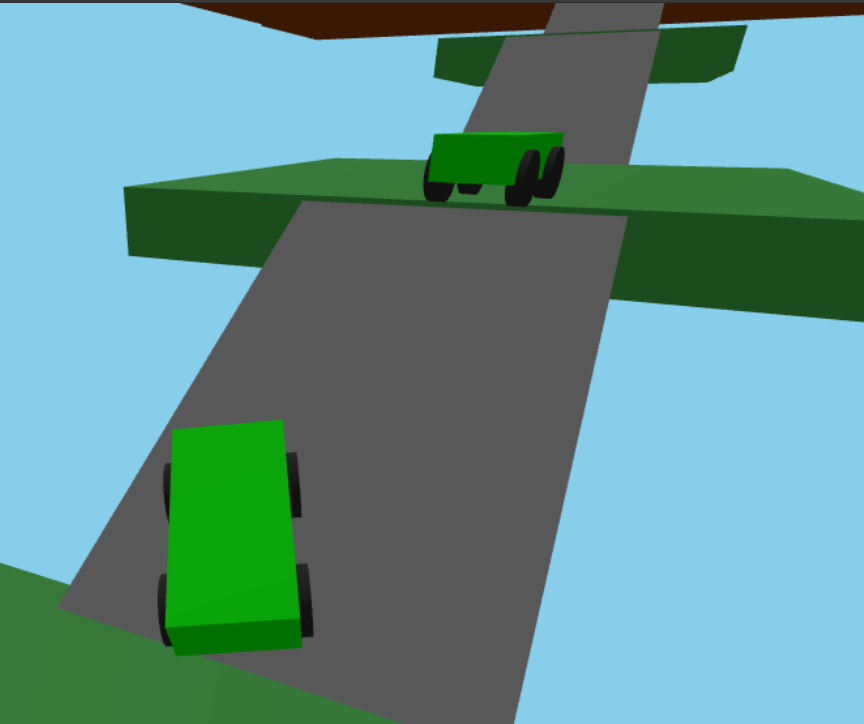
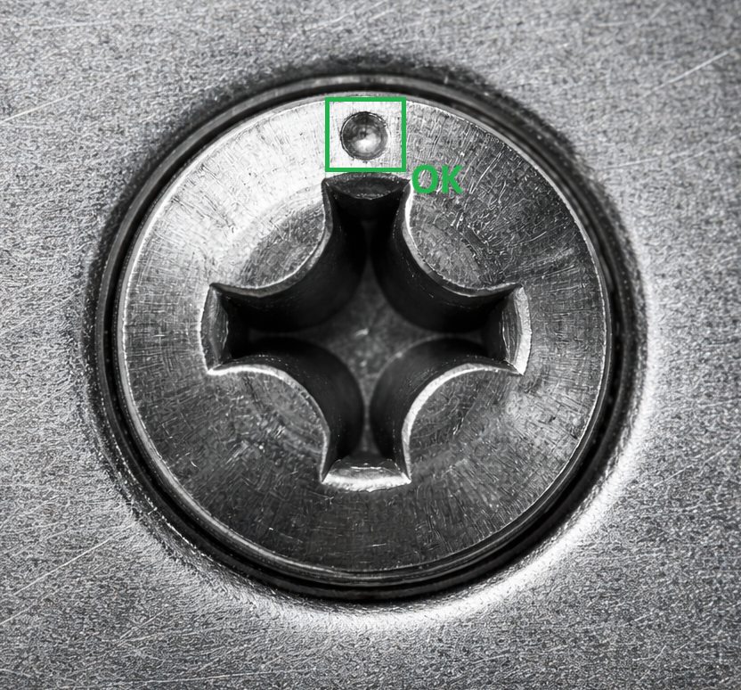
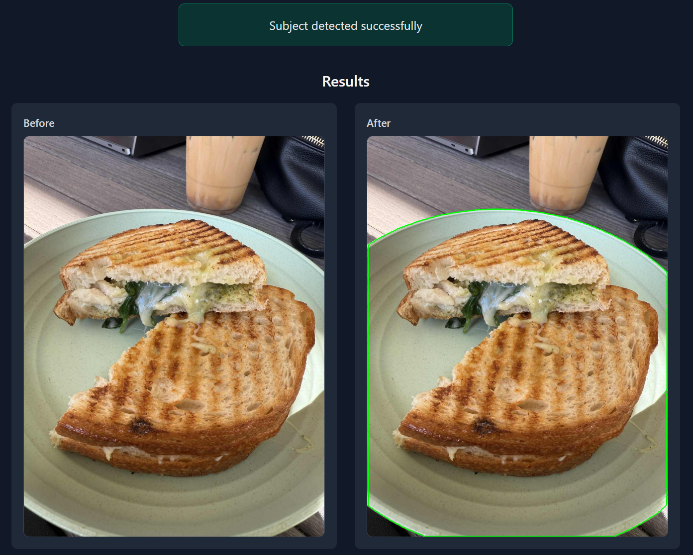
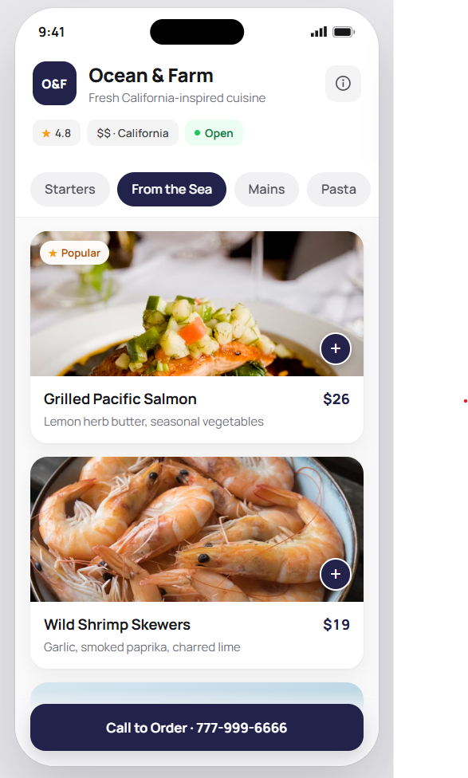

Backend & Cloud • Microservices & Event-Driven • .NET & Azure
Designing, building, and operating cloud-native backend systems using C# and .NET • Production microservices, event-driven architectures, and data-intensive APIs
Software Engineer focused on backend systems, distributed architectures, and cloud-native applications using C# and .NET. Currently working at Alphatec Spine, where I design and operate production microservices, REST APIs, and event-driven workflows for medical cloud platforms with a strong focus on reliability, scalability, and observability. My work includes improving distributed system resilience, troubleshooting complex production issues, optimizing backend performance, and contributing to applied AI and computer vision initiatives for automation and quality analysis. I have a strong background in debugging, root-cause analysis, and designing reliable workflows across distributed services using asynchronous messaging and modern cloud infrastructure.
Outside of work, I build SaaS products and full-stack applications to stay sharp and explore what's next. I created NexMenus, a restaurant-focused SaaS platform, and have shipped projects spanning real-time systems, session replay, cloud infrastructure, AI integrations, and distributed workflows. I gravitate toward hard backend and infrastructure problems — scalability, concurrency, performance, developer tooling — and I'm consistently studying distributed systems, AI engineering, Rust, game physics, and systems programming.

Built a real-time multiplayer 3D driving game using TypeScript, Three.js, and Rapier on the frontend with a Rust and Tokio backend. The main frontend challenge was keeping the codebase manageable as complexity grew. I structured every game object as a class that owns both its physics body and its 3D mesh together. That single decision kept the code clean, readable, and easy to extend.
The Rust backend acts as the central hub. Each client sends its car position, rotation, and tire state over WebSockets. The backend distributes that state to every other connected player and handles the details that need a single source of truth: assigning each player a color, setting their starting position, and storing their name.
On the physics side, acceleration applies an impulse scaled by the car's mass and delta time. Steering applies a torque force rather than rotating the car directly, which gives the handling a natural feel. Tokio handles all backend concurrency using safe async data structures so multiple simultaneous connections never step on each other.

Representative inspection image. Visuals anonymized and simplified.Developed and deployed deep learning-based computer vision models for surgical screw detection and quality inspection using YOLOv8 and PyTorch. The core challenge was making the system reliable across real-world variability: inconsistent lighting conditions, varying camera angles, and differences in photo quality between controlled and field environments.
To address this, I built OpenCV preprocessing pipelines to enhance screw features through edge sharpening, contrast normalization, and noise reduction before inference, making the model's job significantly easier regardless of capture conditions.
I also engineered iterative retraining workflows with targeted data augmentation to accommodate new scenarios and failure cases as they surfaced in production, continuously improving robustness without degrading performance on previously learned cases.

(Private Repository - App in Development) Built an app that takes a food photo and enhances the main dish automatically. The hard part: food photos rarely have one clean subject. You get a plate surrounded by sides, sauces, toppings, utensils, and other dishes all competing for attention.
The pipeline identifies the main subject without any custom training data. It uses Grounding DINO and SAM to detect and reconstruct the subject from its parts, treating a dish as a composite of the plate, toppings, sides, and surrounding elements rather than a single object. A weighted scoring algorithm then picks the right subject even when multiple dishes are present or the shot is taken from an unusual angle.
The second challenge was deployment. Getting inference to run correctly on a server required setting up the right GPU drivers, making sure PyTorch was actually using the GPU, and tuning the stack so the pipeline ran fast enough to be usable. The app also runs on a Raspberry Pi for edge use cases where no server is available.

Built NexMenus, a SaaS platform where restaurants manage their menus, websites, and online orders. The first real challenge was Stripe. Integrating payments for the first time meant understanding the webhook lifecycle, handling callbacks safely, and designing a subscription that gives users real value at a fair price. Getting that wrong early would have broken the business model.
Performance required its own solution. Restaurants upload photos, and loading full-size images on every page visit kills the experience. I built a utility that generates multiple thumbnail sizes and resolutions on upload, then the frontend pulls the right size lazily as the user scrolls.
Spanish localization needed region detection and a proper translation layer applied consistently across the app. Email verification took longer than expected: setting up the email provider infrastructure, getting deliverability right, and testing the full verification flow across edge cases all added up. The onboarding page, where users land after purchasing, also required careful Stripe integration to read the right session state and show the correct next steps.
Once real users started using it, Sentry became essential. Production errors you never see in development show up fast when actual people use your app, and having visibility into what breaks lets me fix things before they affect too many users.
{kind=link}
{kind=link}
{kind=link}
{kind=link}